Key Takeaways
- Best for beginners: Nihongo con Teppei for Beginners
- Best for Genki learners: Japanese with Shun
- Best for intermediate learners: YUYU の日本語 Podcast
- Best bridge into natural conversation: The Miku Real Japanese Podcast
- Best native podcast for casual Japanese: となりの雑談
- Best for advanced learners who love history: COTEN RADIO
Last checked: August 2026. Podcast availability, transcripts, memberships, and episode formats can change.
This post contains affiliate links. If you sign up through my link, I may earn a small commission at no extra cost to you.
Japanese podcasts are one of the easiest ways to move from textbook Japanese into the language you actually hear. You start noticing pacing, fillers, sentence endings, pronunciation, and everyday vocabulary that rarely fit neatly into a grammar exercise.
The harder part is choosing the right podcast.
Beginner audio can feel painfully controlled once your listening improves. Native podcasts can have the opposite problem: they sound interesting, but if you are only catching isolated words, an hour of listening can turn into background noise.
I sorted these 15 Japanese podcasts by level, naturalness, study support, and the kind of listening practice they do best. You do not need to listen to all of them. The goal is to find the one that fits where your Japanese is right now.
Quick Picks: Which Japanese Podcast Should You Start With?
| If you… | Start with | Why |
|---|---|---|
| Are new to Japanese-only listening | Nihongo con Teppei for Beginners | Short, manageable Japanese-first immersion |
| Are studying Genki | Japanese with Shun | Familiar N5–N4 grammar in spoken Japanese |
| Still want English explanations | Learn Japanese Pod | Dialogue plus guided explanations |
| Are moving beyond beginner material | The Miku Real Japanese Podcast | Natural conversation without jumping straight into native media |
| Want more complex topics with English support | Bilingual News | Japanese and English in the same conversation |
| Want regular intermediate immersion | YUYU の日本語 Podcast | Natural Japanese across everyday and cultural topics |
| Want formal Japanese | NHK Radio News | Broadcast pronunciation and news vocabulary |
| Love technology | Rebuild.fm | Native Japanese about software and tech |
| Want real casual conversation | となりの雑談 | Unscripted conversation made for native listeners |
| Love history | COTEN RADIO | Engaging native-level discussions about history |
| Want JLPT-based listening | Let’s Talk in Japanese! | Episodes labeled from N5 to N1 |
My rule: choose by level first, then interest. A podcast you can follow and want to replay will usually teach you more than a harder one you keep abandoning.
You do not need five podcasts at once. Pick one that matches your level, listen long enough to get used to the host, and add another only when you want a different kind of Japanese.
How I Evaluate Japanese Podcasts
I do not choose Japanese podcasts based on popularity alone. A useful podcast needs to work as something you can realistically return to, not just something that looks impressive in a resource list.
These are the five things I pay the most attention to:
- Comprehensibility: Can you follow the main idea without decoding every sentence?
- Naturalness: Does the Japanese sound useful outside a textbook?
- Replay value: Is the audio clear and interesting enough to listen to again?
- Study support: Can you check transcripts, subtitles, vocabulary, or other material when you need it?
- Staying power: Is there enough interesting content to make listening part of a real routine?
A beginner podcast may sacrifice some natural speed for comprehensibility. A native podcast may give you extremely natural Japanese with almost no learner support.
That is why I would not try to name one universal “best” Japanese podcast. The better question is: which podcast gives you the right amount of difficulty now?
Best Japanese Podcasts for Beginners
The best beginner Japanese podcast should give you enough real Japanese to train your ear without making every sentence feel like a test.
These three take different approaches. Teppei gives you Japanese-first immersion, Shun connects listening to familiar textbook grammar, and Learn Japanese Pod gives you more English support when you still need it.
1. Nihongo con Teppei for Beginners ↗
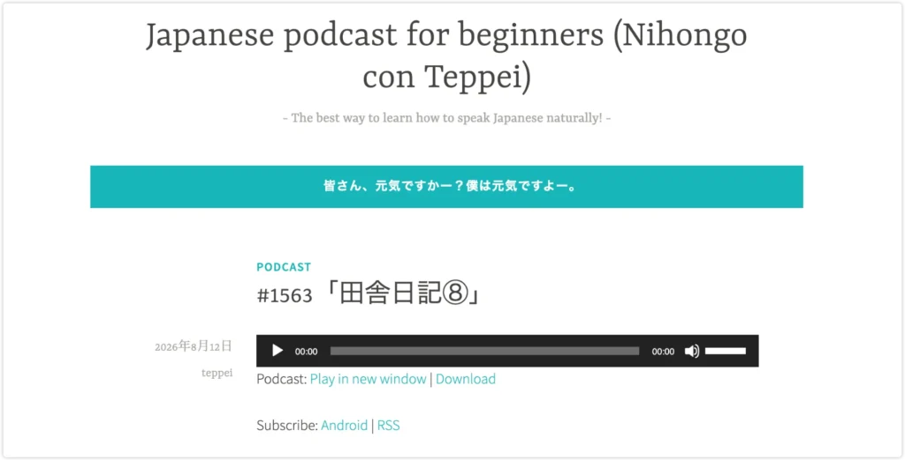
Level: Beginner
Speed: Slow
Format: Monologue
Japanese: Mostly Japanese
Episode Length: Short
Transcript: Paid AI transcripts via Patreon
Naturalness: ★★★★☆
Best for: First Japanese-first immersion
Learning Value: ★★★★★
Nihongo con Teppei is one of the easiest places to start if you want to spend a few minutes entirely inside Japanese.
Teppei keeps the topics familiar and the language manageable, but the episodes do not feel like traditional grammar recordings. He repeats vocabulary and ideas naturally as he talks, which gives you several chances to catch the meaning without stopping every few seconds.
That repetition matters at the beginner stage. A sentence pattern you have studied on paper can appear again and again until you begin recognizing it as sound rather than mentally rebuilding the grammar every time.
The beginner series also has a huge archive, so it works particularly well as a daily listening habit. If you want to check what you missed afterwards, additional transcript support is available through Patreon.
The main tradeoff is that there is not much English scaffolding. If you want someone to stop and explain why an expression works, Learn Japanese Pod will feel easier.
Start here if: you already know some basic Japanese and want to become comfortable listening without reaching for English every few seconds.
2. Japanese with Shun ↗
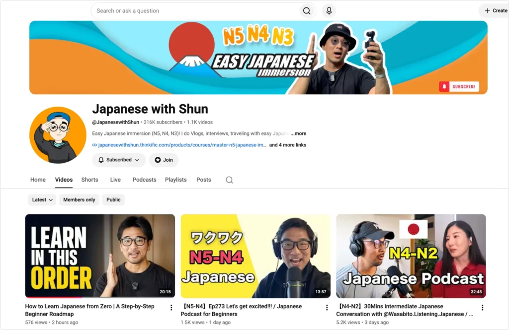
Level: Beginner–Lower Intermediate · N5–N4
Speed: Slow to moderate
Format: Mostly monologue
Japanese: Japanese
Episode Length: Around 10–15 min
Transcript: Patreon transcripts
Naturalness: ★★★★☆
Best for: Genki learners
Learning Value: ★★★★★
Japanese with Shun is the podcast I would pair with Genki 1 or Genki 2.
Much of Shun’s beginner content uses grammar that should already feel familiar if you are working through Genki. That creates a useful bridge between studying grammar and actually hearing it.
Instead of meeting a grammar pattern once in a textbook dialogue, you hear the same structures while someone talks about travel, hobbies, daily life, food, and other ordinary topics. You already understand much of the grammar, so more of your attention can go toward listening.
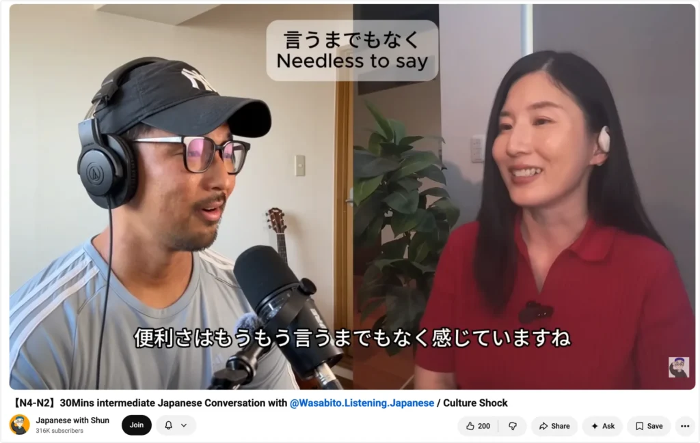
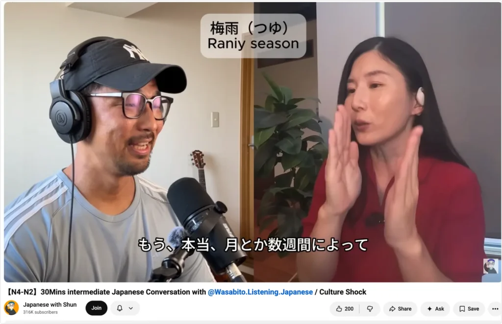
Episodes are also short enough to replay without turning your listening session into a major study project. Transcripts can help when you want to check what you missed or shadow a short section.
The podcast will eventually become too comfortable, and that is a good thing. When you can follow most episodes without much effort, move toward Miku, YUYU, or another podcast with less controlled speech.
Start here if: you use Genki and want the Japanese in your textbook to start sounding like a language people actually speak.
3. Learn Japanese Pod ↗
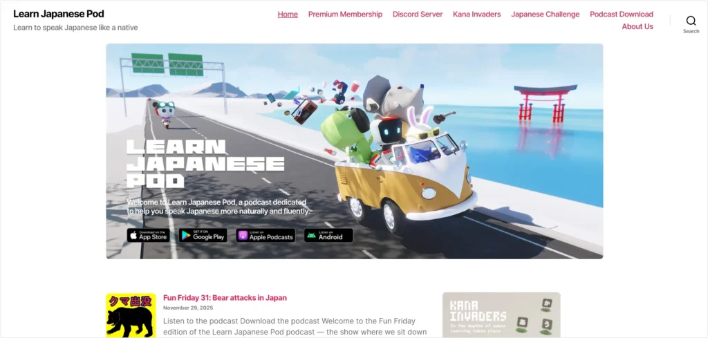
Level: Beginner–Lower Intermediate
Speed: Slow to moderate
Format: Dialogue + explanation
Japanese: Japanese + English
Episode Length: Varies
Transcript: Show notes and additional study material
Naturalness: ★★★★☆
Best for: Learners who still want explanations
Learning Value: ★★★★☆
Learn Japanese Pod is the most guided option in this beginner group.
Episodes are built around practical spoken Japanese and often combine dialogue with explanations of vocabulary, expressions, grammar, and cultural context. The topics focus heavily on situations and expressions you could actually encounter in everyday life.
That makes it useful when Japanese-only audio still feels frustrating. You can understand what an expression means first, then return to the dialogue and hear it again with more context.
The tradeoff is that the more time an episode spends explaining Japanese in English, the less uninterrupted Japanese you hear.
I would use this when you need the support, then gradually add Teppei or Shun as you become more comfortable staying inside Japanese.
Start here if: you want useful everyday expressions but are not ready to give up English explanations yet.
Best Japanese Podcasts for Intermediate Learners
Intermediate listening is where Japanese podcasts become much more interesting.
You no longer need every sentence slowed down, but completely native content can still be exhausting. This stage is about getting used to longer sentences, less predictable vocabulary, natural fillers, and speakers who are no longer waiting for you to catch up.
4. The Miku Real Japanese Podcast ↗
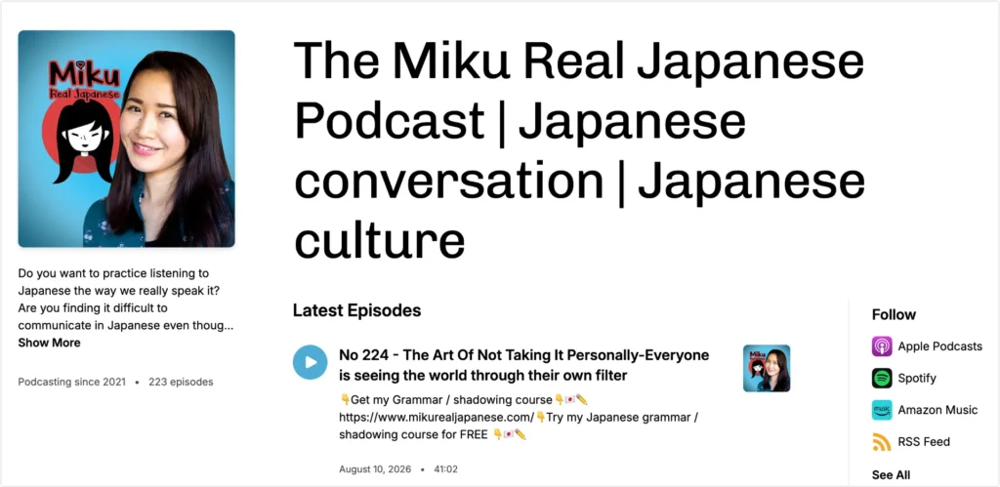
Level: Intermediate · Around N3+
Speed: Moderate to natural
Format: Monologue + conversation
Japanese: Mostly Japanese
Episode Length: Often around 15–35 min
Transcript: Paid transcripts with furigana
Naturalness: ★★★★★
Best for: Moving into natural conversation
Learning Value: ★★★★★
Miku is a strong next step when beginner podcasts start feeling too controlled.
The episodes move beyond grammar-syllabus topics and into conversation, culture, relationships, personal experiences, and everyday Japanese. You begin following the speaker because of what she is saying, while the language learning happens inside that experience.
That is an important shift at intermediate level.
Miku also offers transcript support, which is particularly useful for the classic intermediate problem: you understand a sentence immediately when you read it, but somehow did not hear it at all.
Use the transcript after listening, not before. The gap between what you can read and what you can recognize by ear tells you exactly what needs more listening practice.
Start here if: beginner podcasts feel too easy, but fully native conversations still move a little too quickly.
5. Bilingual News ↗
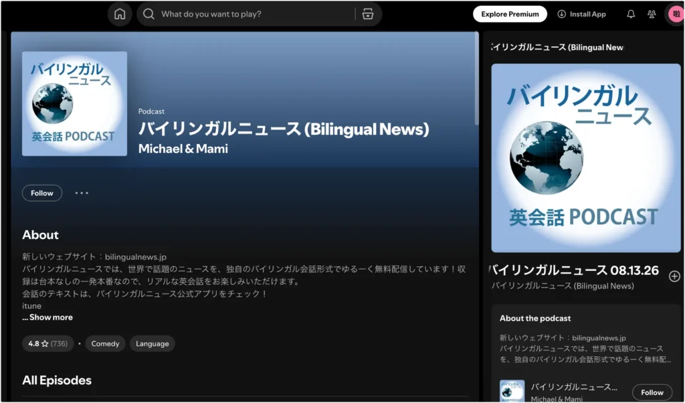
Level: Intermediate–Upper Intermediate
Speed: Natural
Format: Unscripted bilingual conversation
Japanese: Japanese + English
Episode Length: Long-form
Transcript: Official transcript support
Naturalness: ★★★★★
Best for: Complex topics with an English safety net
Learning Value: ★★★★☆
Bilingual News works differently from almost everything else on this list.
Mami and Michael discuss news, science, technology, society, and other interesting topics using both Japanese and English.
The English can either help you or make you lazy.
If you automatically wait for the English whenever the Japanese becomes difficult, you lose much of the listening benefit. A better approach is to process the Japanese first, make a quick guess about the meaning, and then use the English as confirmation.
The topics are also more complex than the everyday themes common in learner podcasts. That means you begin hearing Japanese used for ideas that require more abstract vocabulary.
It is not my first choice for pure Japanese immersion. It is one of the most useful formats for stepping into harder subject matter without completely losing the thread.
Start here if: everyday learner topics are getting repetitive and you want more intellectually interesting listening without going Japanese-only yet.
6. Nihongo con Teppei 波! ↗
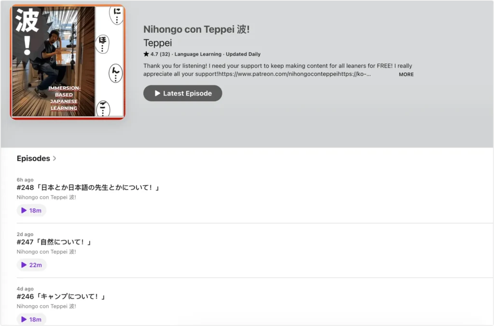
Level: Intermediate–Advanced
Speed: Moderate to natural
Format: Monologue
Japanese: Japanese only
Episode Length: Often around 10–30 min
Transcript: Limited learner support
Naturalness: ★★★★★
Best for: Frequent conversational immersion
Learning Value: ★★★★★
If you started with Teppei’s beginner series, 波! feels like a natural next stage.
The basic idea stays familiar: one person talking directly to you in Japanese. The difference is that the episodes are longer, the language is less restricted, and the conversation wanders more freely.
That unpredictability is useful.
Real listening rarely arrives in a carefully arranged order where today’s vocabulary happens to match the chapter you studied yesterday. Following one person across ordinary topics teaches you how to stay with Japanese even when you cannot predict what comes next.
There is less hand-holding here than with Miku. I would treat 波! primarily as a listening habit, not a transcript-first study resource.
Start here if: you already like Teppei’s style and want more natural Japanese without changing to a completely unfamiliar host.
7. YUYU の日本語 Podcast ↗
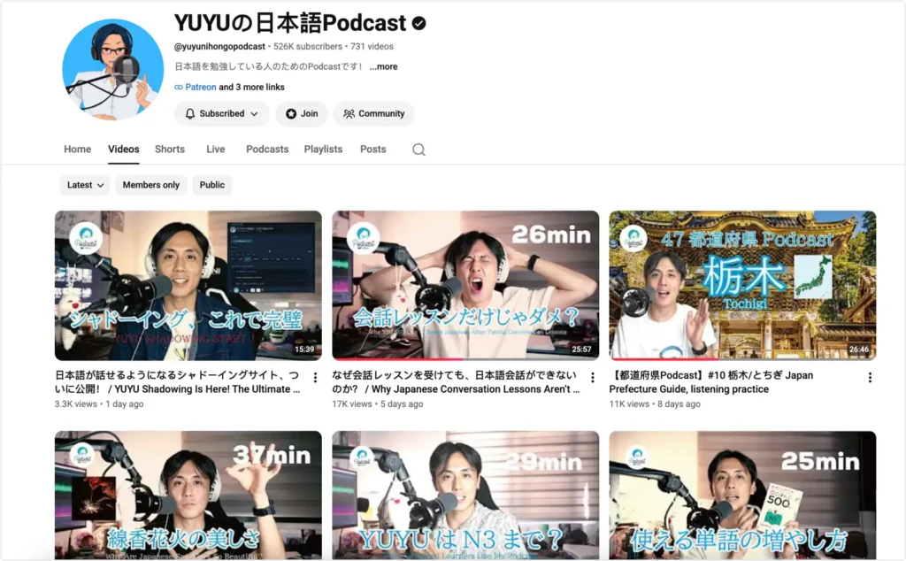
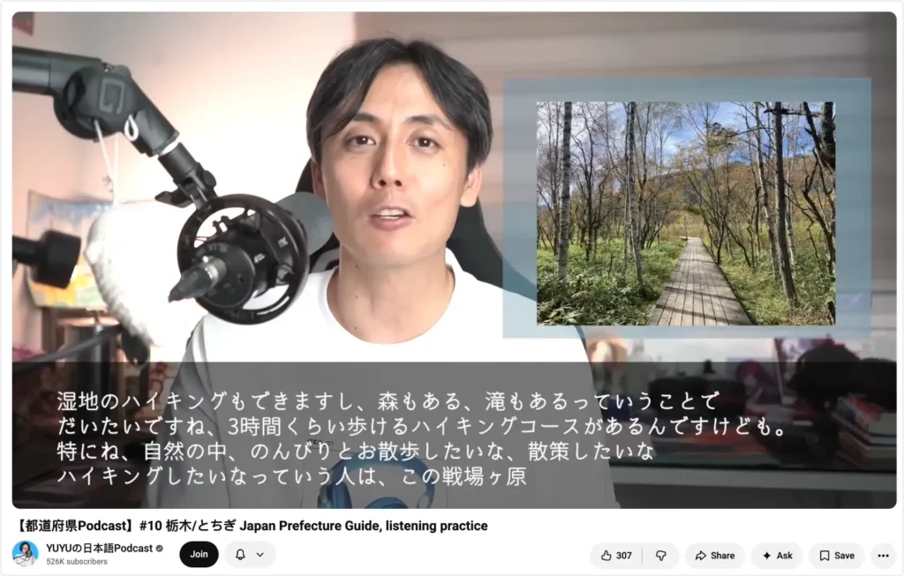
Level: Intermediate–Upper Intermediate
Speed: Moderate to natural
Format: Monologue + occasional conversation
Japanese: Japanese
Episode Length: Often around 35–50 min
Transcript: Patreon support and member content
Naturalness: ★★★★★
Best for: Natural intermediate immersion
Learning Value: ★★★★★
YUYU is one of the strongest intermediate Japanese podcasts on this list.
He talks about language learning, culture, daily life, opinions, personal experiences, and whatever catches his interest.
The reason it works so well at intermediate level is that it does not feel aggressively simplified.
You hear a real personality, digressions, humor, repeated ideas, and the kind of pacing that starts preparing you for native content. At the same time, YUYU is speaking to Japanese learners, so the experience is much less punishing than jumping directly into a random native radio show.
The longer episodes are also useful for building listening stamina.
You do not have to “study” every YUYU episode. Sometimes the best use is simply listening while walking and seeing how long you can remain mentally inside Japanese.
Start here if: you want learner-friendly Japanese that no longer feels like a classroom exercise.
Best Native Japanese Podcasts for Advanced Learners
At advanced level, I would stop looking only for podcasts designed for Japanese learners.
Native podcasts expose you to different registers, incomplete sentences, shared cultural assumptions, jokes, specialized vocabulary, interruptions, and ideas that speakers do not pause to explain.
That is exactly what makes them useful.
8. NHK Radio News ↗
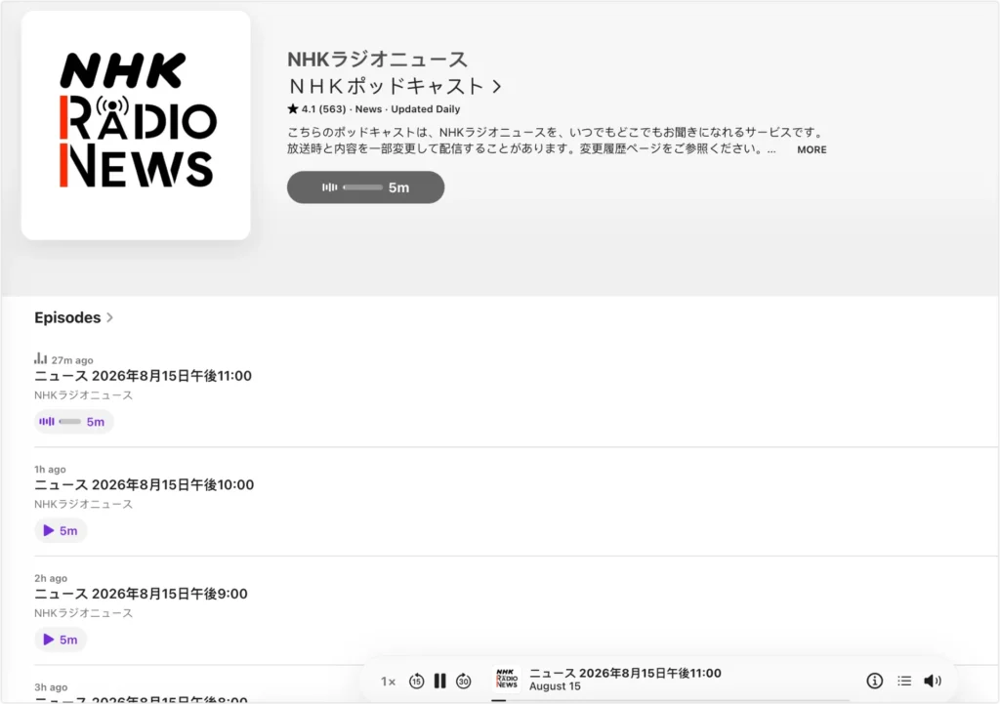
Level: Advanced · N2–N1
Speed: Natural broadcast speed
Format: News
Japanese: Japanese only
Episode Length: Varies by bulletin
Transcript: Related written news available separately
Naturalness: ★★★★★
Best for: Formal Japanese and news vocabulary
Learning Value: ★★★★☆
NHK Radio News changes the type of Japanese you are listening to.
Instead of casual conversation, you hear polished broadcast pronunciation, formal vocabulary, dense information, numbers, names, and sentence structures associated with news reporting.
News Japanese is its own register. Words and structures that feel unusual in casual conversation suddenly become normal when the speaker is reporting an election, economic figures, a natural disaster, or an international event.
I would not use it as my only advanced podcast. The pronunciation is clear, but the information density can make it surprisingly difficult.
A useful method is to choose one story, listen once, then find written Japanese coverage of the same event. If you like learning through Japanese news, I also tested Todaii Japanese, which gives you another way to work with news vocabulary and reading.
Once you already understand the context, unknown vocabulary becomes much easier to infer.
Start here if: conversational Japanese is comfortable and you want to strengthen formal listening for N2, N1, news, or professional contexts.
9. Rebuild.fm ↗
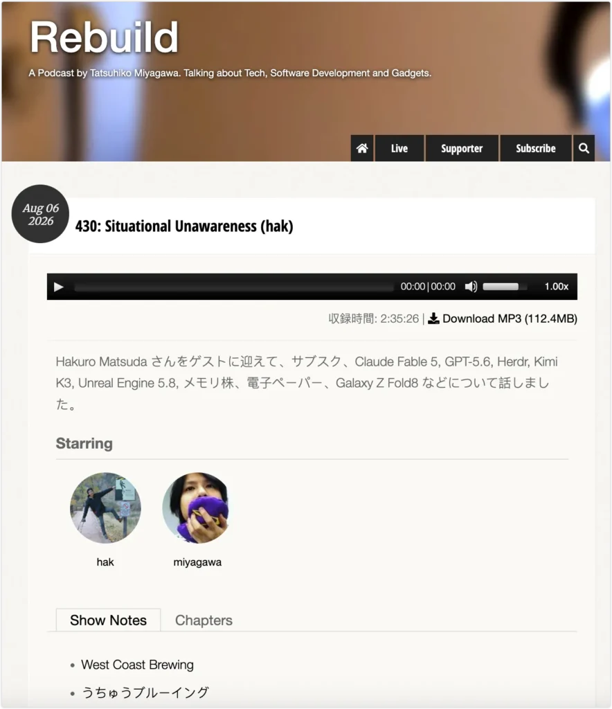
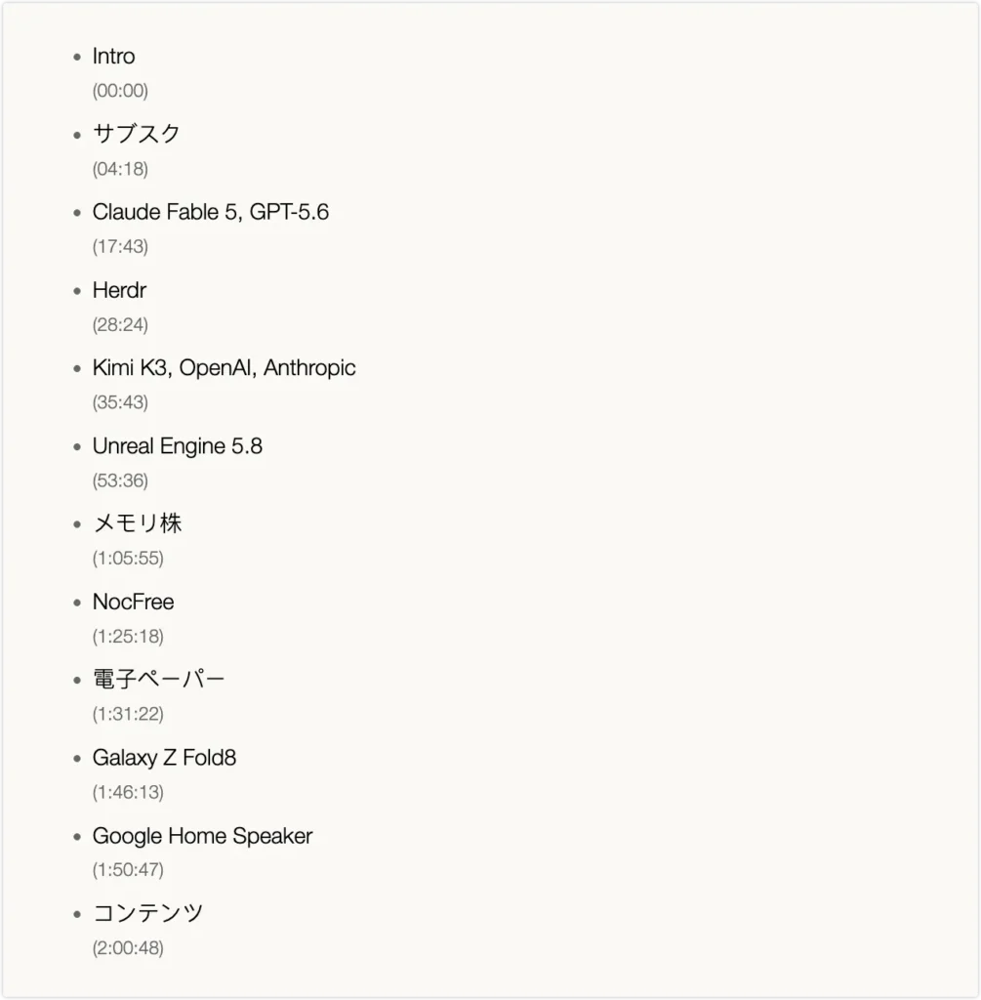
Level: Advanced
Speed: Native
Format: Host + guest conversation
Japanese: Mostly Japanese
Episode Length: Often 1–2+ hours
Transcript: No learner transcript system
Naturalness: ★★★★★
Best for: Tech, software, and internet vocabulary
Learning Value: ★★★★☆
Rebuild is not a Japanese-learning podcast. That is the reason it belongs here.
The show focuses on software development, technology, gadgets, and internet culture.
The conversations can be long, which makes Rebuild much closer to joining a real tech conversation than completing a listening lesson.
You will hear shorthand, English technical vocabulary embedded inside Japanese, casual interruptions, references that are never explained, and speakers assuming you already know what the industry is talking about.
That sounds difficult, but subject knowledge changes everything.
If you already understand software or AI in English, you are not learning the concept and the Japanese at the same time. You can use what you already know about the topic to predict meaning.
This is one of the best ways to start building domain-specific Japanese.
Start here if: technology is already something you would happily listen to for an hour even if language learning were not the goal.
10. Let’s Learn Japanese from Small Talk ↗
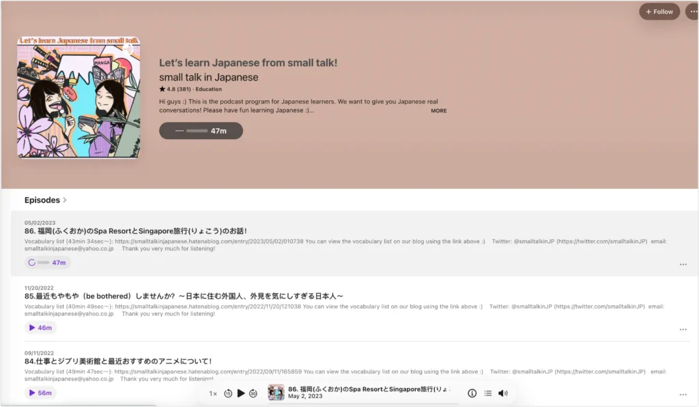
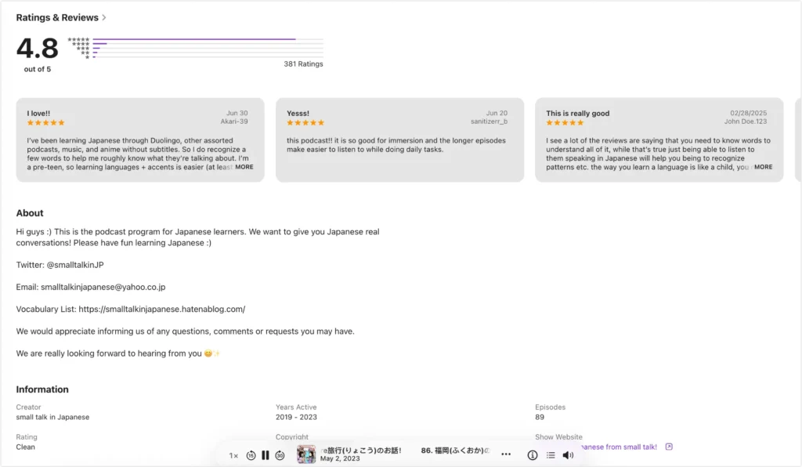
Level: Upper Intermediate–Advanced
Speed: Natural
Format: Two-person conversation
Japanese: Japanese
Episode Length: Often around 25–55 min
Transcript: Vocabulary lists
Naturalness: ★★★★★
Best for: Everyday casual conversation
Learning Value: ★★★★★
Let’s Learn Japanese from Small Talk gives you something formal listening cannot: the slightly messy rhythm of real conversation.
The hosts talk about daily life, travel, anime, personal experiences, feelings, and random things that come up. Vocabulary lists also make it easier to check the words that mattered in a particular conversation without relying on a full line-by-line transcript.
You hear features that disappear from textbook dialogues: filler expressions, casual reactions, changing sentence endings, laughter, unfinished thoughts, and the small phrases people use to hold a conversation together.
That kind of Japanese is difficult to “study” as a grammar chapter.
You have to hear it repeatedly.
Start here if: you understand clean learner Japanese but still struggle when two Japanese speakers relax and talk normally to each other.
11. COTEN RADIO ↗
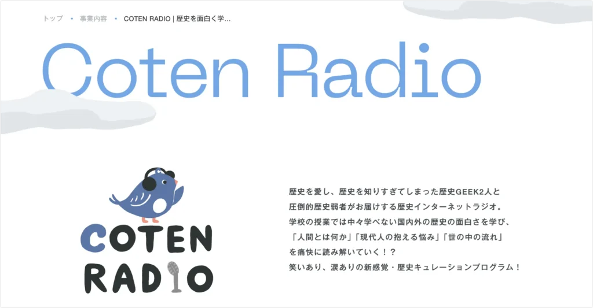
Level: Advanced
Speed: Native
Format: Multi-host discussion
Japanese: Japanese only
Episode Length: Around 40 min for many main episodes
Transcript: No learner transcript system
Naturalness: ★★★★★
Best for: History, society, and big ideas
Learning Value: ★★★★☆
COTEN RADIO is where “study content” starts becoming something you would listen to because the subject itself is interesting.
The show explores Japanese and world history through conversations that use historical events to think about people, society, and the problems humans keep repeating.
The Japanese is demanding.
You will encounter historical names, abstract nouns, specialized vocabulary, jokes, reactions, and long stretches of native conversation. But the narrative structure of history can actually help: once you understand who the people are and what is happening, the language becomes easier to predict.
I would not pause for every unknown historical term. Understand the story first, then go back only if a word keeps appearing or seems essential.
Start here if: you are already comfortable with Japanese podcasts and want native content you would genuinely choose for the subject, not just for language practice.
12. お互いさまっす ↗
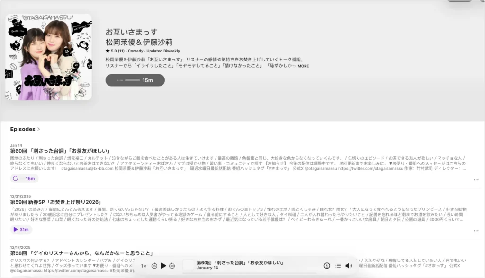
Level: Advanced
Speed: Native
Format: Two-person conversation
Japanese: Japanese only
Episode Length: Often around 15–20 min
Transcript: No learner transcript system
Naturalness: ★★★★★
Best for: Emotional expression and reactions
Learning Value: ★★★★★
お互いさまっす is built around conversations about feelings and everyday experiences.
Listeners send in stories about things that irritated them, embarrassed them, made them happy, or left them unsure what to think. The hosts respond by empathizing, imagining, joking, and connecting those stories to their own lives.
For a learner, the interesting part is the emotional Japanese.
Textbooks are quite good at teaching you how to ask where the station is. They are much worse at teaching the dozens of tiny ways people show hesitation, agreement, disbelief, sympathy, embarrassment, or “I know exactly what you mean.”
This podcast is full of that language.
The shorter episode length also makes replaying one complete native conversation much more realistic.
Start here if: you want to understand how Japanese speakers react to one another, not just the dictionary meaning of the words they say.
13. となりの雑談 ↗
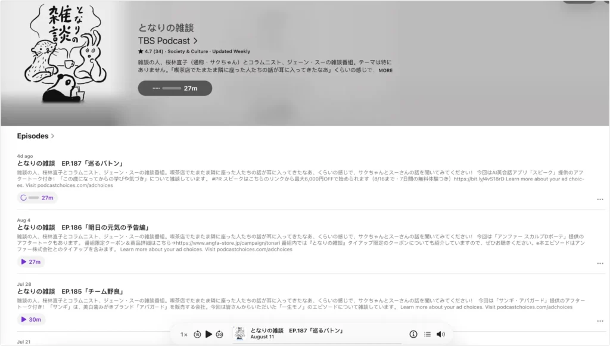
Level: Advanced
Speed: Native
Format: Unscripted conversation
Japanese: Japanese only
Episode Length: Around 15–20 min
Transcript: No learner transcript system
Naturalness: ★★★★★
Best for: Relaxed native conversation
Learning Value: ★★★★★
となりの雑談 is one of the best examples of what advanced listening eventually needs to become.
The idea feels a little like overhearing two interesting people talking at the table next to you.
Topics move naturally from work to relationships to ageing to something that happened that week, then drift somewhere else entirely. There is no learner-friendly setup telling you today’s vocabulary before the conversation begins.
What makes it difficult is not necessarily rare vocabulary. It is how much meaning is carried through context, tone, shared assumptions, sentence fragments, and things that never need to be explicitly said between two native speakers.
That is exactly why it is useful.
At some point, advanced listening stops being about “Can I hear every word?” and becomes “Can I stay inside the conversation even when not everything is spelled out?”
Start here if: you want native conversation that feels like sitting near two interesting people and quietly listening in.
Japanese Podcasts That Work Across Multiple Levels
Not every podcast fits neatly into Beginner, Intermediate, or Advanced.
These last two are useful because the content itself is organized by level, so you can stay with the same resource while changing the difficulty.
14. JapanesePod101 ↗
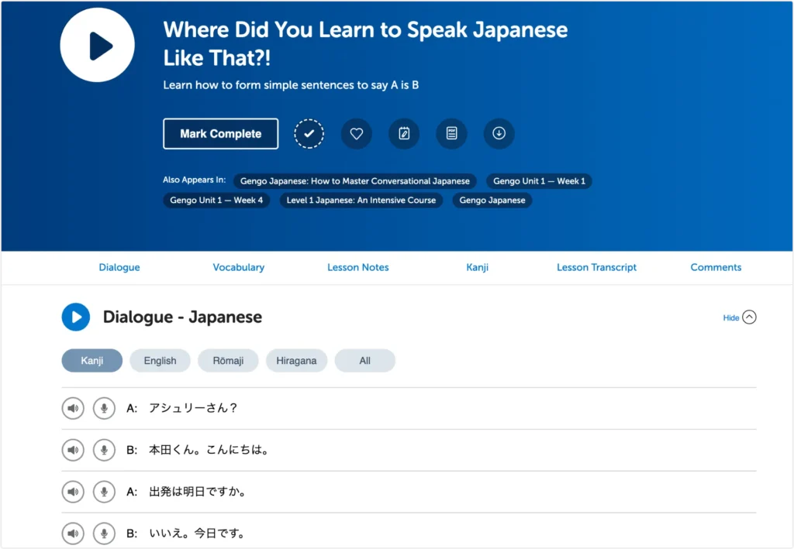
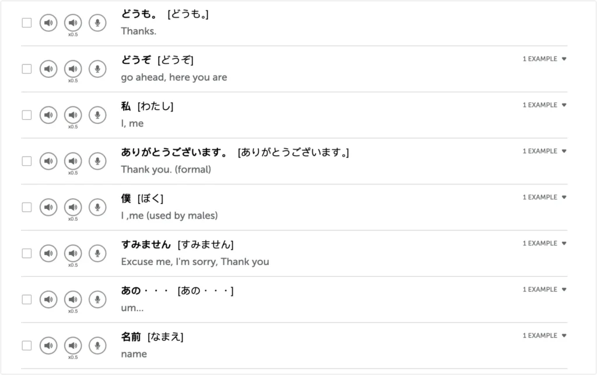
Level: Beginner–Advanced
Speed: Controlled by lesson level
Format: Structured audio + video lessons
Japanese: Japanese + English
Episode Length: Usually short lesson format
Transcript: Lesson notes and paid study tools
Naturalness: ★★★☆☆
Best for: Structured audio learning
Learning Value: ★★★★☆
JapanesePod101 is less like an independent podcast and more like a large audio-based Japanese course.
Its library combines audio and video lessons across different levels, with conversations, vocabulary, lesson notes, and additional learning tools.
That structure can be either its biggest strength or its biggest weakness.
If you like following your curiosity and jumping between native resources, it may feel too organized. If you constantly waste time wondering what to study next, the structure is useful.
I would not choose JapanesePod101 over YUYU or となりの雑談 for pure immersion. I would choose it when I wanted someone else to organize what comes next.
Start here if: you want podcast-style learning but prefer a curriculum to a feed of unrelated episodes.
15. Let’s Talk in Japanese! ↗
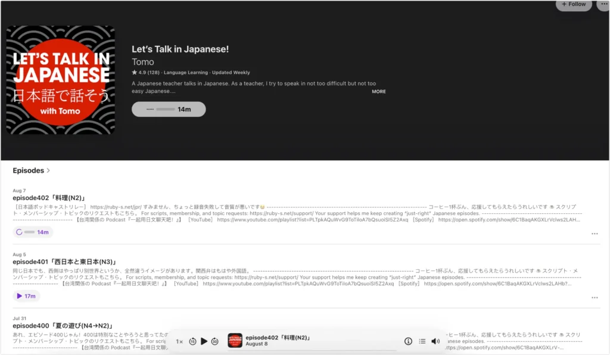
Level: N5–N1
Speed: Changes by level
Format: Monologue
Japanese: Japanese
Episode Length: Usually short
Transcript: Scripts/support available for members
Naturalness: ★★★★☆
Best for: JLPT-leveled listening
Learning Value: ★★★★★
Let’s Talk in Japanese! solves one of the most annoying problems with podcast learning: guessing whether an episode is actually at your level.
Japanese teacher Tomo labels episodes from N5 to N1 to indicate approximate JLPT difficulty.
That makes it especially useful when you are between levels.
You can listen to an N4 episode and notice that it feels easy, try N3, and immediately get a rough sense of where your listening ability begins to break down.
The topics are varied enough that it does not feel like listening to JLPT practice questions. You are still hearing someone talk about ordinary subjects in Japanese; the level label simply removes some of the trial and error.
I would use the labels as guidance rather than treating them as a precise test of your JLPT ability. Podcast comprehension and JLPT listening are related, but they are not exactly the same skill.
Start here if: you want a simple way to increase listening difficulty gradually without constantly changing podcasts.
Best Japanese News Podcasts
If you want to use Japanese news podcasts for listening practice, I would start with Bilingual News or NHK Radio News. They work for different stages, so the better choice depends on how much support you still need.
| Podcast | Best for | Level | Language |
|---|---|---|---|
| Bilingual News | News and complex topics with English support | Intermediate–Upper Intermediate | Japanese + English |
| NHK Radio News | Formal news Japanese at natural broadcast speed | N2–N1 | Japanese |
Bilingual News is the easier bridge if Japanese-only news still feels too dense. Once you can follow formal Japanese more comfortably, NHK Radio News gives you clearer practice with broadcast pronunciation, current affairs vocabulary, numbers, and information-heavy sentences.
You can find my full notes on both podcasts in the level-based recommendations above.
Best Japanese Podcasts With Transcripts
A Japanese podcast with a transcript is especially useful when you can follow the general meaning but keep missing words you already know. Listen first, then use the text to check what your ears failed to recognize.
| Podcast | Level | Transcript support |
|---|---|---|
| Nihongo con Teppei for Beginners | Beginner | Paid AI transcripts via Patreon |
| Japanese with Shun | N5–N4 | Patreon transcripts |
| The Miku Real Japanese Podcast | Around N3+ | Paid transcripts with furigana |
| Bilingual News | Intermediate–Upper Intermediate | Official transcript support |
| YUYU の日本語 Podcast | Intermediate–Upper Intermediate | Patreon/member support |
| Let’s Talk in Japanese! | N5–N1 | Member scripts/support |
I would still listen before opening the transcript. The useful moment is when you discover, “I know this sentence when I read it, but I did not recognize it when I heard it.”
How to Actually Learn Japanese With Podcasts
You do not need to turn every podcast episode into a two-hour study session.
Most of the time, I would rather listen consistently and study one small section well than spend so long analyzing a single episode that I stop enjoying podcasts altogether.
Step 1. Listen Without the Transcript
Play the episode once without reading.
Do not stop every time you miss a word. Listen for the topic, mood, words you recognize, repeated phrases, and the general direction of what the speaker is saying.
Your first listen is a test of what your ears can already process.
Step 2. Check What You Missed
Listen again with the transcript, subtitles, vocabulary list, or episode notes if they are available.
This is where you notice the difference between:
“I don’t know this Japanese.”
and:
“I know this sentence. I just didn’t recognize it when someone said it.”
That second problem is exactly what listening practice can fix.
You can also shadow a short section by repeating the speaker aloud and trying to match the timing, pauses, and rhythm. Thirty seconds of careful imitation is often enough.
Step 3. Save One Useful Sentence
Do not save every unknown word.
A podcast can contain dozens of unfamiliar expressions, and collecting all of them usually creates a vocabulary list you never review.
Instead, choose one sentence you genuinely want to understand, remember, or use.
Look at how the words work together, not just what each individual word means.
Step 4. Retell What You Heard
Close the transcript and explain the episode in three or four Japanese sentences.
You can answer simple questions:
- What was the episode about?
- What happened?
- What did the speaker think?
- What did you find interesting?
Your Japanese does not have to be perfect.
The point is to discover which language you can recognize and which language you can actually produce.
When I Want More Support Than Audio Alone
Podcasts are great for training your ear, but there are times when I want more visual context—especially when I can hear a phrase but cannot quite work out what I am hearing.
That is where I use Lingopie.

Instead of working with audio alone, you learn through shows and videos with interactive subtitles. You can check a word while you are watching, save useful vocabulary, return to it later, and replay lines when you want to listen or shadow more carefully.
What I like about this workflow is that it keeps the language connected to a real scene. I do not need to turn every line into a flashcard. I can keep watching, look up the words that actually matter, save a few of them, and hear them again in context.
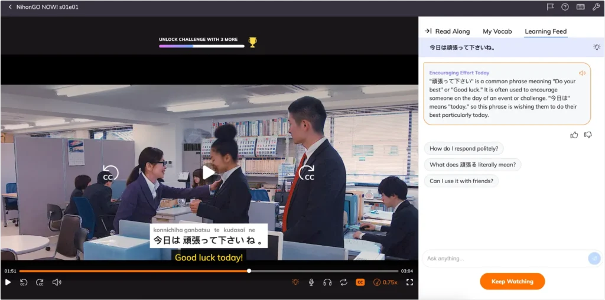
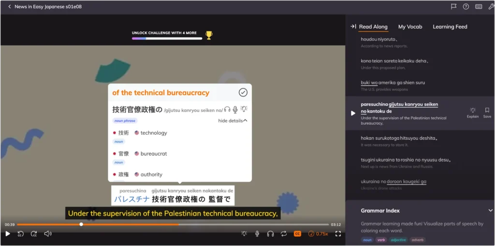
For me, podcasts and video do different jobs:
Podcasts build listening stamina. Video gives me more context when I need help understanding what I hear.
Japanese Podcasts FAQs
What is the best beginner Japanese podcast?
For Japanese-only listening, I would start with Nihongo con Teppei for Beginners. The episodes are short, the language is manageable, and repetition makes it easier to keep following even when you miss individual words.
If you are studying Genki, Japanese with Shun may be an even better fit because much of the language stays close to familiar beginner grammar.
What is the best Japanese podcast for intermediate learners?
My first choices are The Miku Real Japanese Podcast and YUYU の日本語 Podcast.
Miku is especially good when you are first moving out of controlled beginner content. YUYU is my pick when you want longer, more natural Japanese that still feels accessible to language learners.
What Japanese podcasts are good for N3?
Start with Miku, YUYU, or Nihongo con Teppei 波!.
At N3, I would look for material where you can understand the overall message without needing to read every line. You should still encounter enough unfamiliar vocabulary and natural speech to have something to learn.
What Japanese podcasts are good for N2 or N1?
At N2–N1, begin mixing learner podcasts with content made for native speakers.
NHK Radio News is useful for formal Japanese, Rebuild for technology, COTEN RADIO for history, and となりの雑談 or お互いさまっす for conversational Japanese.
Do I need a transcript to learn Japanese from podcasts?
No.
For easier material, listening without text is valuable because it forces your brain to process Japanese as sound. Transcripts become particularly useful when you can understand the general meaning but want to identify exactly what you missed.
I would usually listen first and read second.
Should beginners listen to native Japanese podcasts?
You can, especially if you enjoy them, but I would not make them your main study material.
If nearly everything sounds like an uninterrupted stream of noise, there is not enough comprehensible language for you to notice patterns easily. Keep native podcasts as optional exposure and use something easier for focused practice.
How much of a Japanese podcast should I understand?
There is no perfect percentage.
For active study, I prefer material where I can follow the overall conversation and catch a large amount of the language, while still meeting new expressions. If you are constantly lost, move down a level. If nothing makes you think anymore, move up.
How often should I listen to Japanese podcasts?
Consistency matters more than long sessions.
Ten or twenty focused minutes on most days can do more for your listening than one huge session followed by a week without Japanese. Replaying the same episode is also more useful than it may feel, because the second listen lets you notice language that disappeared the first time.
Can Japanese podcasts help with the JLPT?
Yes, especially for listening comprehension, vocabulary recognition, and getting faster at processing spoken Japanese.
For more targeted practice, Let’s Talk in Japanese! is convenient because episodes are organized around different JLPT levels.
Final Thoughts
The best Japanese podcast is not necessarily the fastest, most native, or most popular one.
It is the one you understand well enough to stay engaged with and enjoy enough to come back to.
If you are a beginner, start with Teppei or Shun. If you are somewhere around intermediate, move into Miku, YUYU, or 波!. Once those begin to feel comfortable, choose native content based on what you genuinely care about—technology, history, news, relationships, or simply listening to people talk.
Then keep the study process small:
Listen → check → save one thing → say something back.
That is enough to turn a podcast from background audio into real Japanese practice.